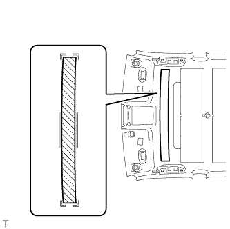
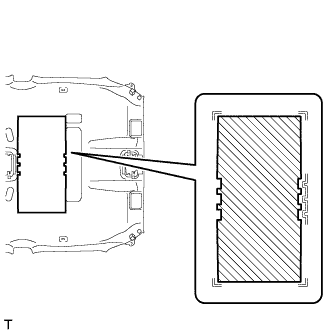
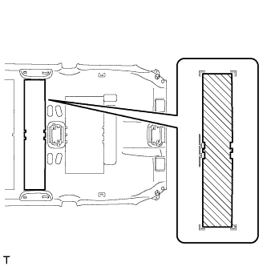
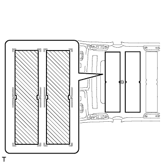

ОБИВКА КРЫШИ (для 5-х дверной модели) > ПОВТОРНАЯ СБОРКА |
| 1. УСТАНОВИТЕ ШНУР АНТЕННЫ № 2 В СБОРЕ |
Для моделей без люка:
Наложите новую двухстороннюю клейкую ленту, как показано на рисунке.
 | Маркировочная лента |  | Двухсторонняя клейкая лента |
Присоедините захват, показанный на части рисунка с обозначением "1".
Совместите шнур антенны с метками, показанными на части рисунка с обозначением "2", и прикрепите его к двухсторонней клейкой ленте.
Совместите шнур антенны с метками, показанными на части рисунка с обозначением "3", и прикрепите его к двухсторонней клейкой ленте.
Совместите маркировочную ленту на шнуре антенны с V-образными метками на обивке крыши, показанными на части рисунка с обозначением "4".
Совместите шнур антенны с метками, показанными на части рисунка с обозначением "5", и прикрепите его к двухсторонней клейкой ленте.
Совместите маркировочную ленту на шнуре антенны с V-образными метками на обивке крыши, показанными на части рисунка с обозначением "6".
Собрав провисание шнура антенны на участке с обозначением "7" на рисунке, совместите шнур антенны с метками и прикрепите его к двухсторонней клейкой ленте.
Присоедините захваты, показанные на частях рисунка с обозначениями "8" и "9".
Совместите шнур антенны с метками, показанными на части рисунка с обозначением "10", и прикрепите его к двухсторонней клейкой ленте.
Присоедините шнур антенны к выемкам в обивке крыши, как показано на частях рисунка с обозначениями "9" и "11".
Для моделей с люком:
Наложите новую двухстороннюю клейкую ленту, как показано на рисунке.
| Маркировочная лента | | Двухсторонняя клейкая лента |
Присоедините захват, показанный на части рисунка с обозначением "1".
Совместите шнур антенны с метками, показанными на части рисунка с обозначением "2", и прикрепите его к двухсторонней клейкой ленте.
Совместите маркировочную ленту на шнуре антенны с V-образными метками на обивке крыши, показанными на части рисунка с обозначением "4".
Совместите шнур антенны с метками, показанными на части рисунка с обозначением "4", и прикрепите его к двухсторонней клейкой ленте.
Присоедините 5 зажимов, показанных на части рисунка с обозначением "5".
Совместите маркировочную ленту на шнуре антенны с V-образными метками на обивке крыши, показанными на части рисунка с обозначением "6".
Собрав провисание шнура антенны на участке с обозначением "7" на рисунке, совместите шнур антенны с метками и прикрепите его к двухсторонней клейкой ленте.
Совместите шнур антенны с метками, показанными на части рисунка с обозначением "8", и прикрепите его к двухсторонней клейкой ленте.
Присоедините захваты, показанные на частях рисунка с обозначениями "9" и "10".
Совместите шнур антенны с метками, показанными на части рисунка с обозначением "11", и прикрепите его к двухсторонней клейкой ленте.
Присоедините шнур антенны к выемкам в обивке крыши, как показано на частях рисунка с обозначениями "10" и "12".
| 2. УСТАНОВИТЕ ЖГУТ ЭЛЕКТРОПРОВОДКИ КРЫШИ № 1 |
Наклейте бутиловую ленту на обивку крыши так, чтобы лента была совмещена с маркировкой для жгута электропроводки, как показано на рисунке.
| *A | Для моделей без люка | *B | Для моделей с люком |
| *C | Для моделей с развлекательно-информационной системой для задних пассажиров | - | - |
| *1 | Маркировка жгута проводов | *2 | Бутиловая лента |
Совместите жгут электропроводки крыши № 1 с точками установки жгута электропроводки, как показано на рисунке, и установите его, закрепив на обивке крыши.
Закрепите все зажимы.
Поверните разъемы противосолнечных козырьков примерно на 90° по часовой стрелке, чтобы закрепить их на обивке крыши.
| *A | Для моделей без люка | *B | Для моделей с люком |
| *C | Для моделей с развлекательно-информационной системой для задних пассажиров | *D | Для моделей с левосторонним рулевым управлением и датчиком дождя |
| *E | Для моделей с зеркалом с электрохромным покрытием | *F | Для моделей с правосторонним рулевым управлением и датчиком дождя |
| *1 | Разъем козырька | *2 | Точка установки жгута проводов |
| 3. УСТАНОВИТЕ ЛАМПУ ЛЕВОГО АКСЕССУАРНОГО ЗЕРКАЛА В СБОРЕ |
Установите лампу аксессуарного зеркала, закрепив ее 3 захватами.
| 4. УСТАНОВИТЕ ЛАМПУ ПРАВОГО АКСЕССУАРНОГО ЗЕРКАЛА В СБОРЕ |
| 5. УСТАНОВИТЕ ШУМОИЗОЛЯТОР КРЫШИ № 4 (для моделей без люка) |
|  |
Совместите шумоизолятор крыши № 4 с маркировкой на обивке крыши и закрепите шумоизолятор крыши № 4 в месте, показанном на рисунке, с помощью термоклея или двухсторонней клейкой ленты.
| 6. УСТАНОВИТЕ ШУМОИЗОЛЯТОР КРЫШИ № 3 |
|  |
Совместите шумоизолятор крыши № 3 с маркировкой на обивке крыши и закрепите шумоизолятор крыши № 3 в месте, показанном на рисунке, с помощью термоклея или двухсторонней клейкой ленты.
| 7. УСТАНОВИТЕ ШУМОИЗОЛЯТОР КРЫШИ № 2 (для моделей без люка) |
|  |
Совместите шумоизолятор крыши № 2 с маркировкой на обивке крыши и закрепите шумоизолятор крыши № 2 в месте, показанном на рисунке, с помощью термоклея или двухсторонней клейкой ленты.
| 8. УСТАНОВИТЕ ШУМОИЗОЛЯТОР КРЫШИ № 1 (для моделей без люка) |
|  |
Совместите шумоизолятор крыши № 1 с маркировкой на обивке крыши и закрепите шумоизолятор крыши № 1 в месте, показанном на рисунке, с помощью термоклея или двухсторонней клейкой ленты.
| 9. УСТАНОВИТЕ БОКОВОЙ ВЫХОДНОЙ ВОЗДУХОВОД С ДЕФЛЕКТОРОМ В ОБИВКЕ КРЫШИ (для моделей с задней системой кондиционирования) |
Введите в зацепление 6 захватов, чтобы установить боковой выходной воздуховод с дефлектором в обивке крыши.